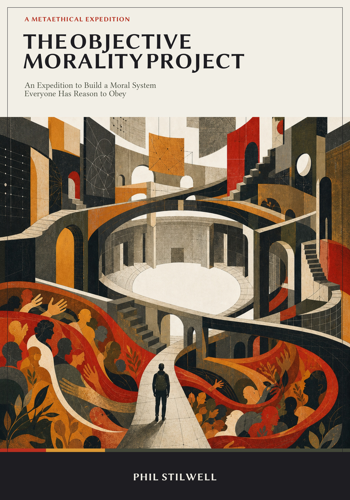

one distinction needs attention.
Choose cases, expose a seam, and leave with a precise map of that bounded question.

The comprehensive synthesis
An Expedition to Build a Moral System Everyone Has Reason to Obey
Begin with the expectation that objective morality can be built. Specify what it must accomplish, construct it piece by piece, let its strongest candidates make their case, and follow every repair until the project reaches the limit of what it can establish.
One project, two forms
Each interactive on this site holds one problem still: meaning, authority, reasons, evidence, standing, value conflict, disagreement, responsibility, or what remains after moral realism. The book connects those problems in the order required to construct and audit a complete system.
Choose cases, expose a seam, and leave with a precise map of that bounded question.
Build a Candidate System, keep a Debt Ledger, survive the pressure cases, and inspect what each repair costs.
The seven-part expedition
Analogies, thought experiments, cases, and written exercises make the reader supply the bridges. Every part records what survived, what was surrendered, and what remains unsupported.
Fix the meanings of objective, moral, true, binding, knowable, coherent, and action-guiding before testing begins.
Name who counts, what receives a verdict, what matters, how values generate rules, and how conflicts are settled.
Separate motivation, commitment, agreement, law, pressure, and practical support from authority over an informed dissenter.
Test intuition, genealogy, disagreement, evidence, factual inputs, uncertainty, and correction without borrowing the conclusion.
Give consequence, duty, virtue, care, sacred order, fair construction, local standards, pluralism, and hybrids their strongest hearing.
Audit reform, public codes, power, dissent, responsibility, moral emotion, and every remaining route to the promised authority.
Preserve facts, relationships, emotions, criticism, and politics, then begin public reasoning from named human stakes and revisable commitments.
The result the journey earns
Every examined route either depends on a human or divine stance, imports an unsupported evaluative bridge, leaves a decisive selector brute, becomes indeterminate in conflict, or gains determinacy by surrendering another part of the objective promise.
This is a construction result, not a deductive proof that every logically possible objective moral fact is impossible. It is also not nihilism. Pain, attachment, agency, trust, evidence, institutions, power, and hope do not vanish when an objective constitution fails to materialize.
The final movement therefore stops trying to broker compromise among entire moral systems. It begins with common or mutually legible emotions and values, investigates the facts, names the tradeoffs and affected people, and builds policies with safeguards, dissent, review, and repair.
Choose a format
The illustrated and print PDFs contain the complete book. The companion workbook extracts the reusable construction exercises and pressure materials.
The full 7 × 10 inch book with the finished illustrated cover as its opening page.
Open the reader editionThe complete typeset interior, including rotated wide tables and print-ready navigation.
Download the print PDFA responsive digital edition with chapter navigation and horizontally scrollable wide tables.
Download the EPUBNineteen construction worksheets, forty-five pressure cases, eighteen repairs, and the Civic Stakes Brief.
Download the workbookThe blank constitution is waiting
The argument works only if the strongest construction gets a fair chance before the debts come due.